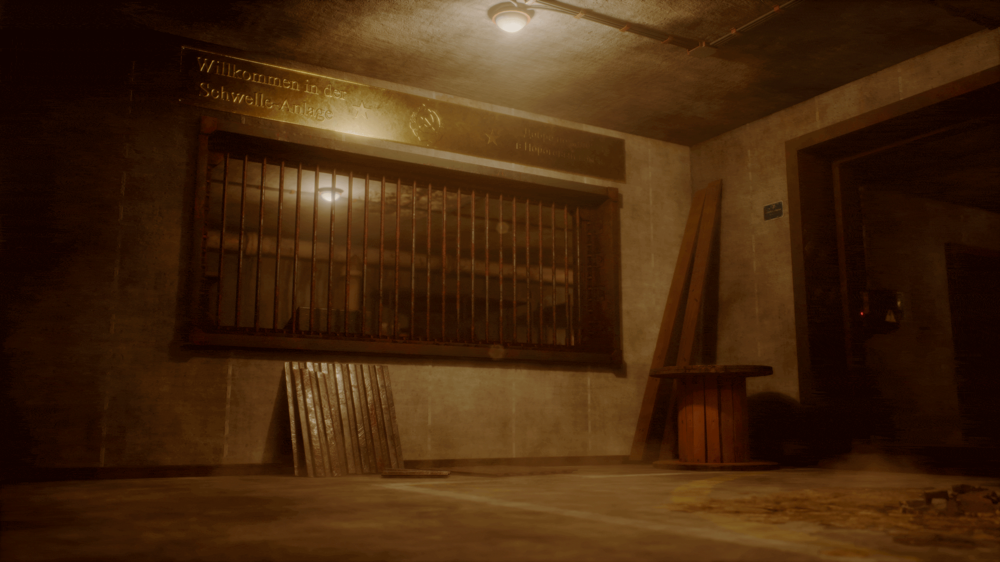
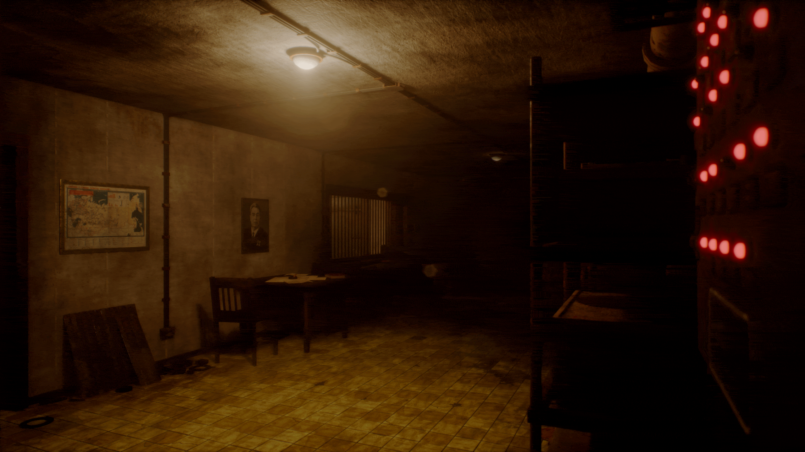
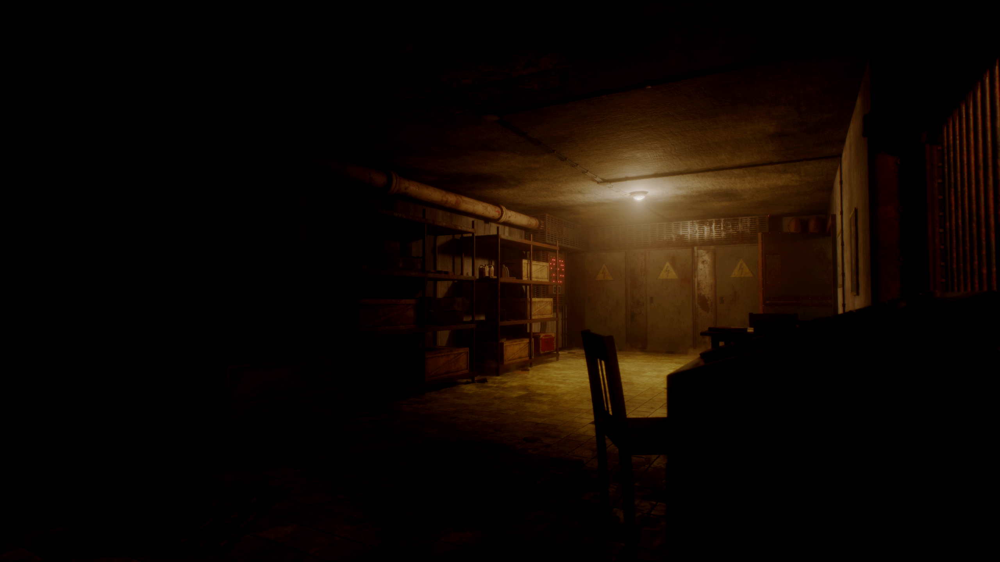
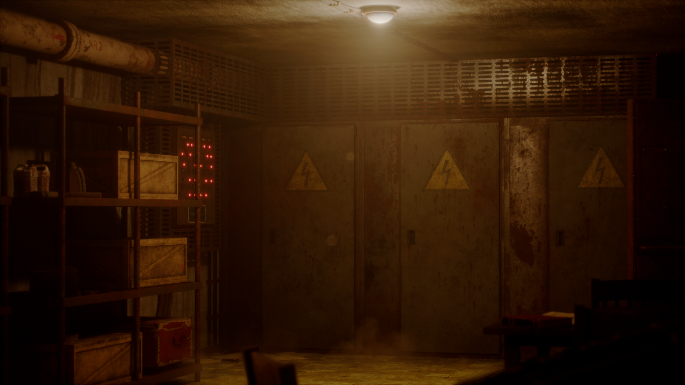
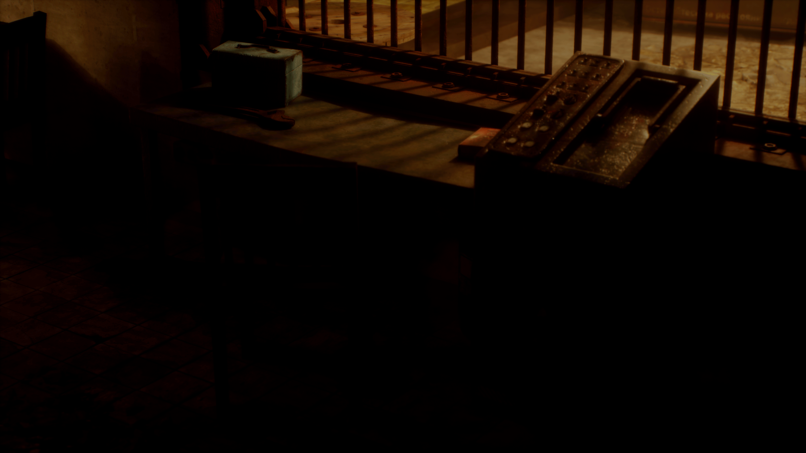
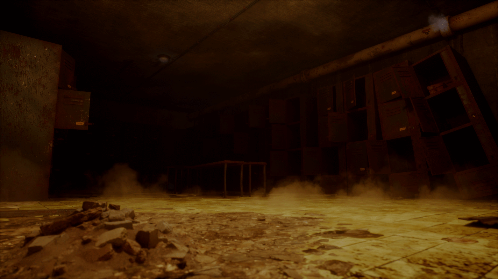
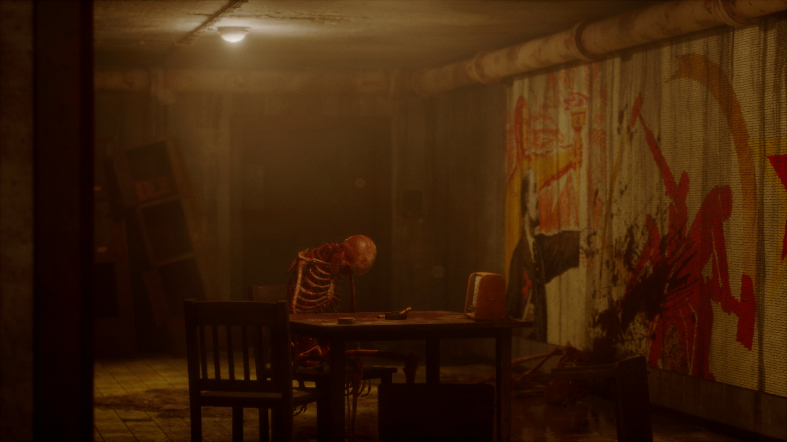
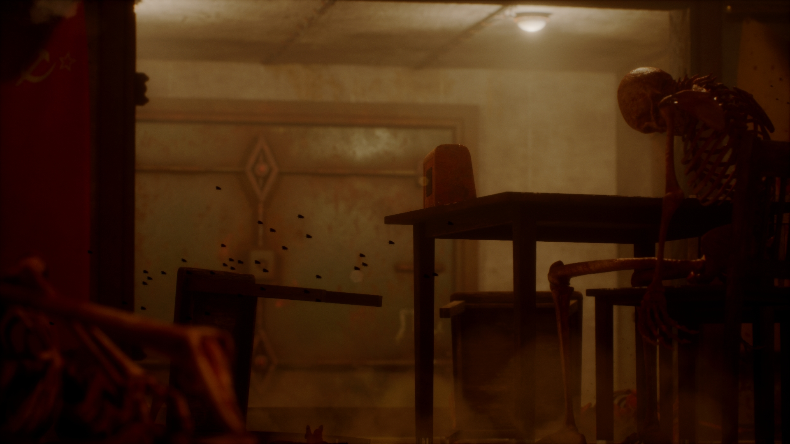
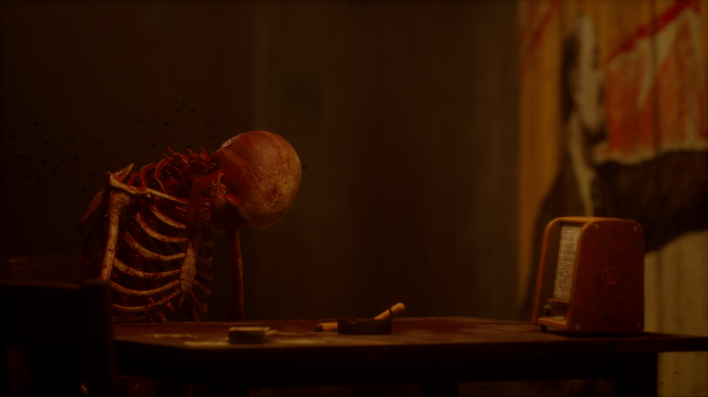
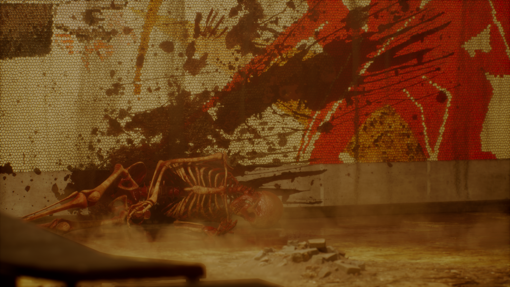

This was my final piece of work in my educational journey, being my master's project. From the very start of my master's year I had the concept in mind for what I would do in this environment. Throughout the year I worked on new tools and techniques that would facilitate a final piece that I could truly be proud of.
For this piece I wanted to explore themes of totalitarianism, horror and science gone too far. Creating a piece of art that was not just to be used as a functional environment for a horror game, but something that communicates a story without having to spell it out to the player.
This was somewhat a struggle with the overall limited scope of the project, but with the time constraints considered, I beleieve I managed to create the appropriate atmosphere to effectively communicate the tone, if not the entire foundational story of the work.

One of the most important aspects to creating this unsettling horror effect was the use of light material functions to create the flashing lights. These lights flash at random intervals which sync with sounds that I added into the environement, as games are interactive mediums, looking at the envrionment holistically was important to creating an immersive experience for the player.


Much of this environment is modular. From the pipes to the wall pieces, each is made to specific measurements to ensure a good fit when they are placed into the envrionment. The materials for the walls were created in Substance Designer, ensuring seamless transitions between the wall pieces across the environment. Similarly, I used custom smart materials in Substance Painter to ensure uniform material usage across each of the unique pieces, such as the lockers, doors and desk. Likelihood is that under the soviet system much of these furniture pieces would have been created using similar or identical materials from the same factories, painted in the same paint and they would wear away similarly over time.
In the smart materials there are generators that assist in creating wear in specific places where they would be in reality, such as rust developing in crevices, paint wearing away where it would have been interacted with, etc.


With this project I effectively improved all aspects of my workflow, from modeling, texturing and baking to VFX there has been so much development. You can find a video detailing all the intricacies of this project at the bottom of this article.


